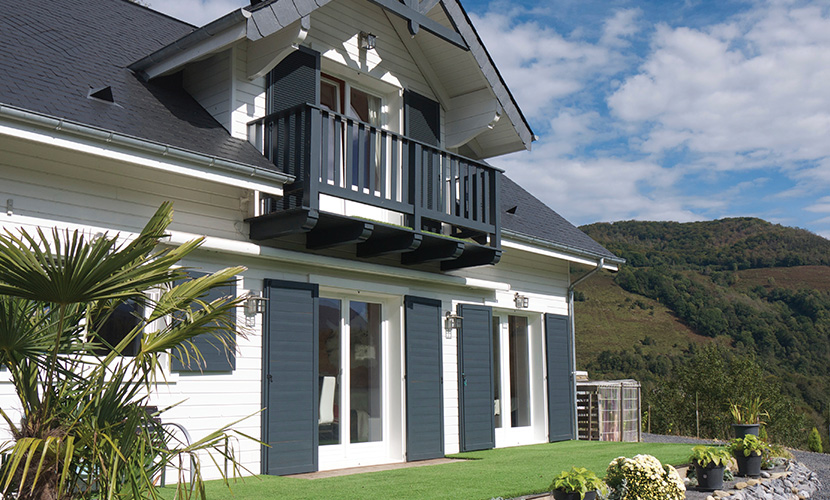
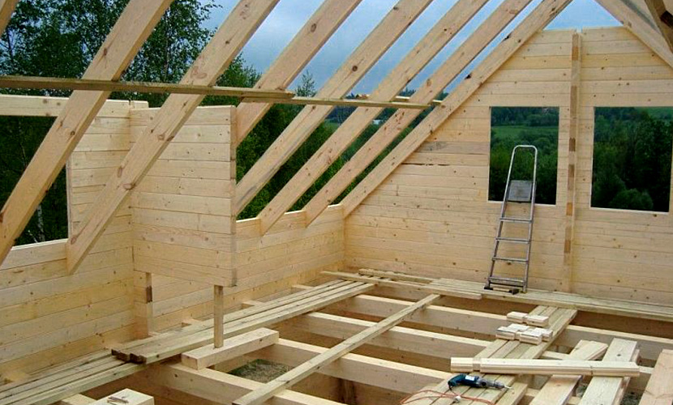

Our main building materials are prefabricated logs with additional insulation. Thanks to years of experience in this business, combined with extensive knowledge of modern construction technologies, we are prepared to undertake wide variety of projects. We are using only latest production technologies and highest quality materials. Our professional approach and fine craftsmanship allow us to build reliable homes that are highly energy efficient.
Production
Our construction process is based on employing carefully measured logs and connecting them using “tongue and groove” method. But before that happens, our logs have to undertake multi-stage preparation process, which involves chamber heating, followed by planing on four sides. Alternatively, walls can be assembled using logs made out of multiple layers glued together, which makes them highly durable and less susceptible to cracks or deformations.
Assembly
Our homes are assembled using prefabricated materials, which makes entire construction process similar to playing with building blocks, since every element has been precisely measured, cut and fits perfectly with others.

Isolation and insulation
Our walls are covered with highest quality thermal wool - material that is well known for its outstanding thermal insulation capabilities, that performs well even on really thin walls. That layer is usually located between outside wall and inner layer of the house. When it comes to electrical, gas and plumbing installations, we place those within the walls, as it helps us achieve better final look. All that is being done simultaneously with the regular construction works. Last stage of our process is finishing the walls. To do so, depending on personal preference of customer, we can use either wooden cover board, or plasterboards.
Timber roof truss
While designing an outstanding roof constructions, we put strong emphasis on their firmness and durability, while maintaining both thermal and acoustic insulation. We always make sure that our roof trusses will be compatible with any roofing material available on the market. But most of all, we make sure that we use only highest quality wood.
Frame Houses
We are offering our services in assembling frame houses with double sided wooden padding. Every single house that you can see on our website can be made using this technology.